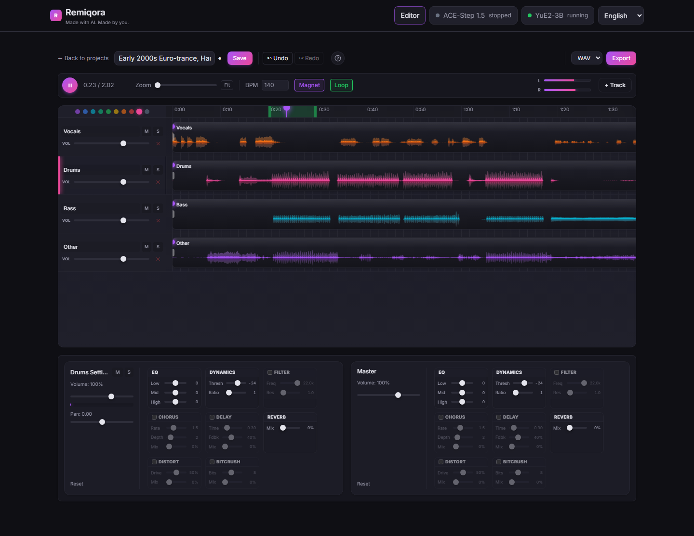
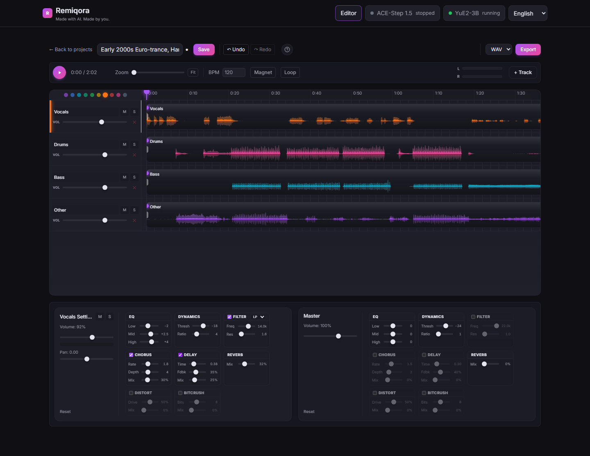
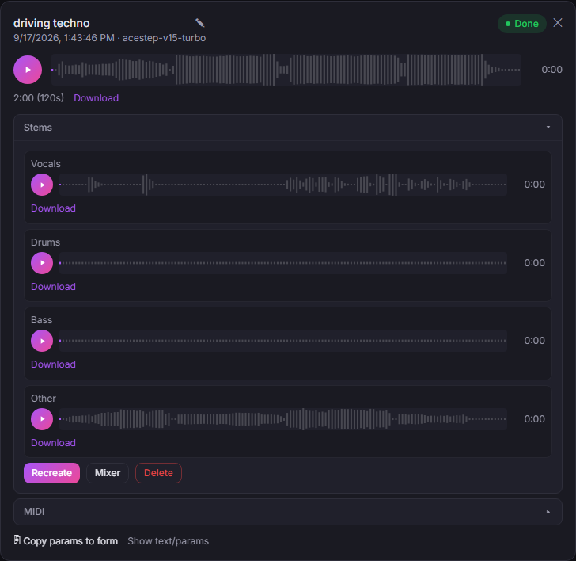
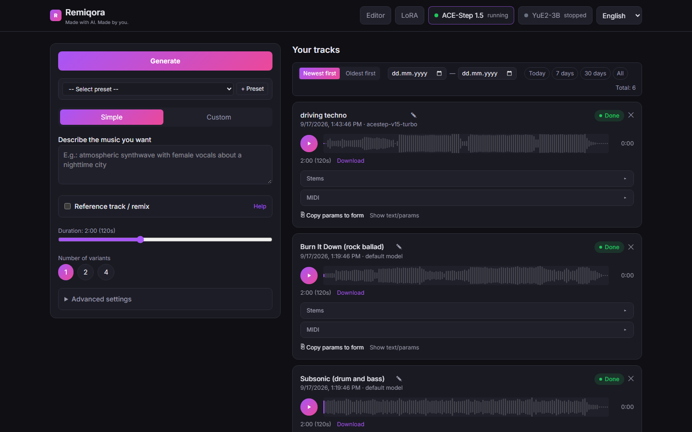
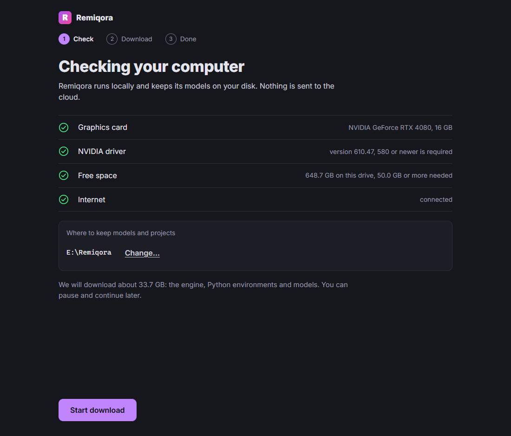
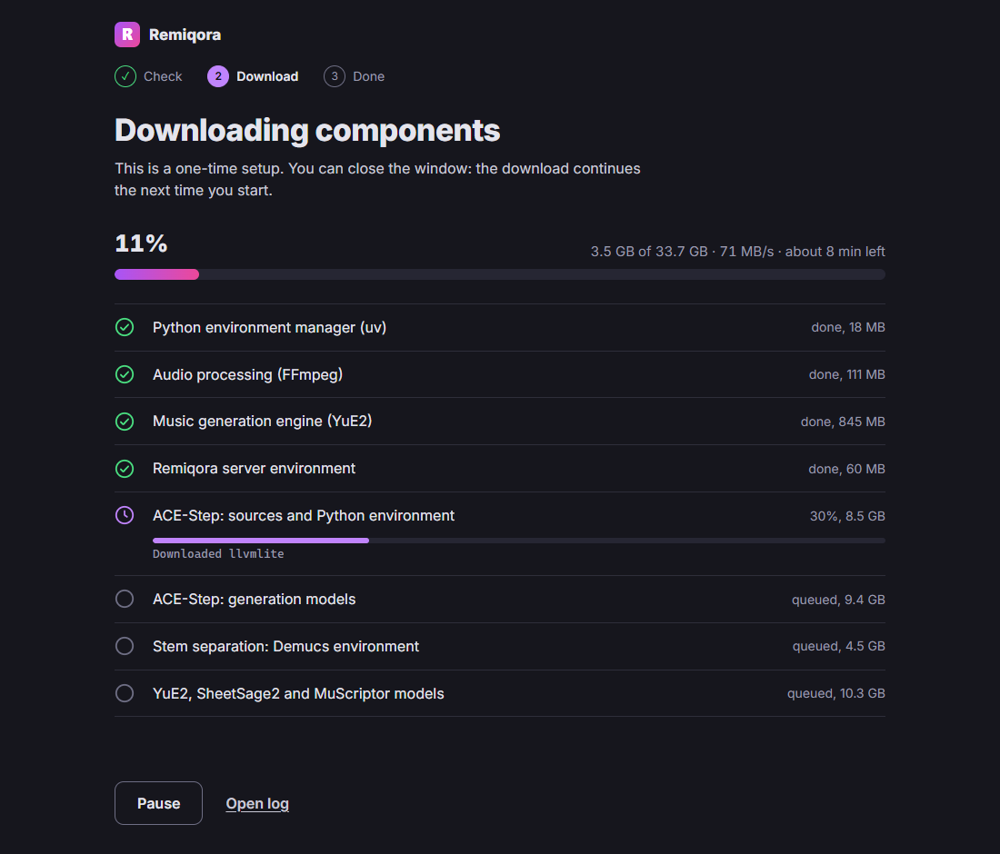

- Open source · Runs locally
- Windows · NVIDIA CUDA
- macOS · Apple Silicon
Remiqora. Made with AI.
Made by you.
Remiqora is a local music studio. ACE-Step 1.5 and YuE2-3B generate the track, Demucs splits it into stems, and a multitrack editor in your browser mixes it down. Everything runs on your own computer.
Get it on GitHubWatch the demo
- Generate
- Split stems
- Mix & FX
- Export
ACE-Step 1.5 + YuE2-3B · Local and open source



The four stems of one track
One generated track, split into its four stems. The waveforms come from a real 2:02 demo track. Select a lane to focus on it.
From prompt to mixdown
Generate
Describe the music, or bring a style and lyrics. ACE-Step 1.5 and YuE2-3B share one interface: pick a model in the header and Remiqora starts it and stops the other, so a single GPU is enough.

The generation form and your track library Split into stems
One click separates any track into vocals, drums, bass and the rest with Demucs. Open in editor sends all four into a new project.
Four stems, each with its own player and download Mix in the editor
Trim, split and fade clips, loop a section, snap to a BPM grid, and time-stretch a clip to the project tempo without changing its pitch.
The timeline with a loop region and live level meters Export
Render the mix as WAV or MP3 in the browser. The result is saved back to your library.
A full effects rack on every channel
Every track and the master bus carry the same eight effects, all running in real time: EQ, compressor, filter, chorus, delay, reverb, distortion and bitcrusher.
Also in the box
- LoRA training for ACE-Step, right in the interface
- Melody extraction with SheetSage2 and audio-to-MIDI with MuScriptor
- Undo and redo for 30 steps, and WAV or MP3 export
- Interface in English and Russian, in your system language by default
Or use it as a desktop app
On Windows and on Macs with Apple Silicon, Remiqora also comes as an installer. It opens in its own window and sets everything up on the first launch: no Git, no Python, no compiler.
- It checks your GPU, driver and free space, then installs into one folder you choose. Plan for roughly 30 GB of downloads.
- Closing the window stops the model servers and frees the GPU.
- Models, projects and logs stay in that folder. Nothing is uploaded anywhere.
Built with Electron around the same web interface. The first launch uses uv for Python, the prebuilt audio.cpp engine (CUDA or Metal) and FFmpeg.
Experimental. The installers are not signed yet, so Windows shows a SmartScreen warning and macOS may ask you to allow the app. They are not on the Releases page yet: build one from the desktop folder.


What to know before you install
Works today
- Windows with an NVIDIA CUDA GPU. Tested on an RTX 4080 with 16 GB.
- macOS on Apple Silicon. Tested on an M5 with 24 GB; newer and slower than the Windows path.
- Stem separation, MIDI transcription and the editor.
Limits
- No Linux setup scripts yet.
- ACE-Step and YuE2 run one at a time.
- Output quality is whatever the models give you.
- The desktop installers are experimental and unsigned.
- In active development: 0.1.0 is a pre-release.
- Licenses: Remiqora and ACE-Step 1.5 are MIT, but the YuE2-3B weights are CC BY-NC 4.0, so no commercial use.
Install
With the scripts you need Git and they install the rest; every option and troubleshooting step is in the README. Prefer no terminal? Use the desktop app above.
Windows with an NVIDIA GPU
git clone https://github.com/inikolax/remiqora.git
cd remiqora
setup_prereqs.bat
setup_models.bat
dev.batInstall the NVIDIA driver yourself: the script leaves it alone. Model downloads are about 10 GB.
macOS with Apple Silicon
git clone https://github.com/inikolax/remiqora.git
cd remiqora
./setup_prereqs.sh
./setup_models.sh
./dev.shUses a prebuilt Metal build of YuE2, so no compiler is needed.